01
巴塞隆納塔海灘 Barceloneta Beach / Platja de la Barceloneta 巴塞隆納塔海灘是巴塞隆納最容易抵達、也最有城市感的海灘。它不是那種需要專程玩水的度假海灘，而是抵達日用來「曬一下地中海、走平路、慢慢醒來」的低強度散步點。
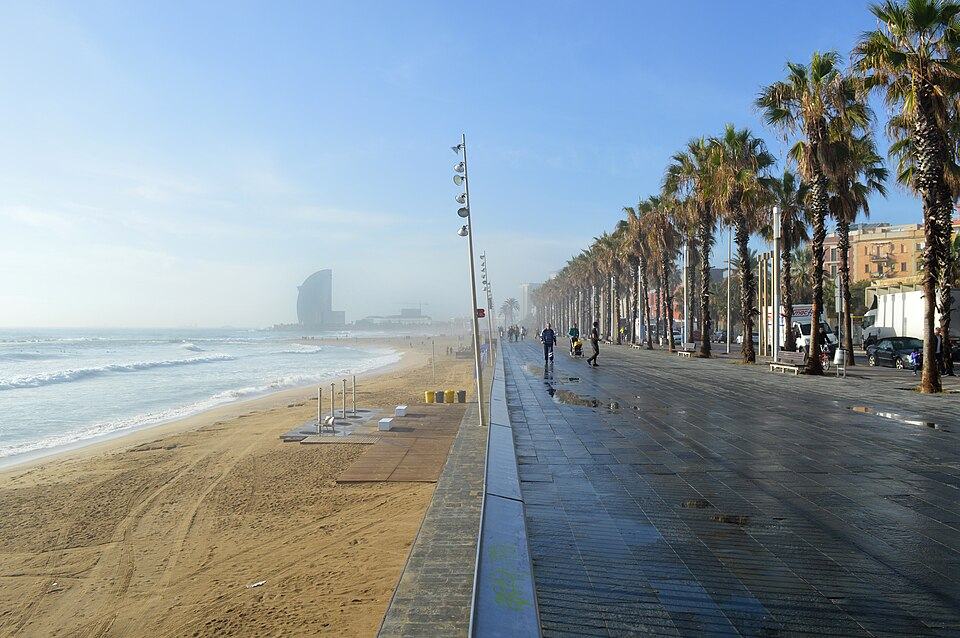
Wikimedia Commons · CC0 · Promenade and beach, Platja de la Barceloneta, Barcelona, 2015.jpg 歷史 · Historia Barceloneta 原本是靠海的漁民與碼頭工人社區，街廓整齊、房屋密集，與哥德區那種中世紀巷弄完全不同。1992 年巴塞隆納奧運前後，城市大幅整理海濱，把原本較工業、封閉的海岸線轉變成今天的海灘、步道、餐廳與公共空間。現在看到的 Barceloneta，其實是「老漁村氣質」與「奧運後新海濱城市」的混合體。
看點 · Qué Ver 重點是海風、沙灘、棕櫚樹、海濱步道與夕陽前後的城市氣氛。若剛抵達巴塞隆納，這裡比進大教堂或排隊景點更適合調時差。可以沿著海邊走一小段，看當地人跑步、騎車、遛狗，也可以找長椅坐著休息。若天氣好，往 W Barcelona 方向看海岸線，會有典型巴塞隆納海濱印象。
動線 · Recorrido 抵達日建議只走 Barceloneta 海灘與舊港 Port Vell 一小段，不要硬走到奧林匹克港或更遠。可從飯店搭計程車到海邊，沿平路散步 30–60 分鐘，找地方吃簡單晚餐後回飯店。對慢遊節奏來說，這是很好的「第一天不要逞強」安排。
提醒 · Aviso 沙灘與海濱步道人多，手機、錢包仍要防扒。海邊餐廳位置好但價格與品質差異大，不必一定坐第一排。9 月底傍晚通常舒服，但若風大或曬了一天，大家容易脫水，仍要帶水。若大家很累，坐著看海比走完整段更重要。
02
舊港 Port Vell 舊港是巴塞隆納老城通往海邊的門戶，適合與 Barceloneta 海灘、蘭布拉大道尾端、哥倫布紀念碑一帶串在一起。它的優點是平路、開闊、有海景，適合抵達日或休息日下午短走。
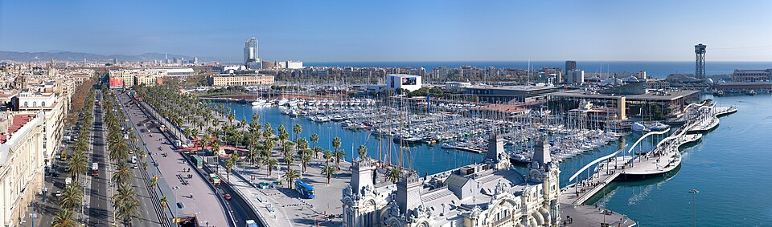
Wikimedia Commons · CC BY-SA 3.0 · Port Vell, Barcelona, Spain - Jan 2007.jpg 歷史 · Historia Port Vell 的名字意思就是「老港」。巴塞隆納作為地中海商業城市，港口一直是城市命脈；但近代很長一段時間，港區較偏工業與貨運功能，一般市民不一定能親近海邊。1980 年代末到 1992 年奧運前後，巴塞隆納推動海濱改造，舊港逐漸轉型成公共散步、觀光、遊艇碼頭與休閒空間。今天的 Port Vell 因此不只是漂亮海景，也代表巴塞隆納重新打開城市與海的關係。
看點 · Qué Ver 可以看遊艇碼頭、木棧道、海鷗、港灣反光，以及通往 Maremagnum 一帶的水上步道。若從蘭布拉大道一路走到海邊，會感覺城市從狹窄老城突然打開到港灣。這種空間轉換，就是 Port Vell 最值得看的地方。
動線 · Recorrido 若抵達日去 Barceloneta，可把 Port Vell 當作同一段海濱散步的一部分。建議從海灘或哥倫布紀念碑附近開始，依體力走一段即可。若大家累了，找港邊座位或咖啡店坐下，不需要完整繞港。
提醒 · Aviso 港邊風可能比市區大，晚上回飯店以計程車較省力。人潮密集時仍要防扒。若同一天剛長途飛行，不建議再接蘭布拉大道長走，避免第一天體力透支。
03
La Cova Fumada 與 bomba 小吃 La Cova Fumada 是 Barceloneta 老區裡很有在地感的小吃店，常被拿來代表巴塞隆納的庶民 tapa 文化。它不是正式景點，但若行程中想吃「bomba」，可以把它當作海濱散步後的在地餐飲體驗。
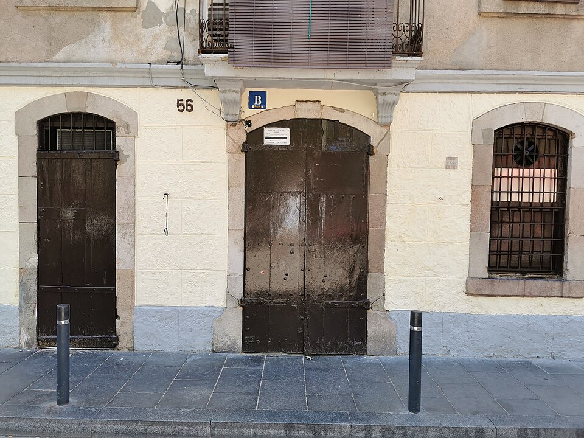
Wikimedia Commons · CC BY-SA 3.0 · La Cova Fumada.jpg 歷史 · Historia Barceloneta 過去是漁民與港口勞工聚集的社區，飲食風格偏簡單、直接、份量不大。bomba 是馬鈴薯泥包肉餡後油炸、淋上醬汁的小吃，常被視為巴塞隆納塔區的代表性 tapa。這種食物不是高級料理，而是很有社區氣味的酒吧小點。
動線 · Recorrido 適合安排在 Barceloneta 海灘或 Port Vell 散步前後，但要先確認營業時間。若剛抵達、大家累了，不必為了排隊或等位硬去；可改成附近較舒適的餐廳。
提醒 · Aviso 熱門時段可能客滿，座位與空間不一定適合久坐。若偏好安靜、乾淨、可預約的晚餐，La Cova Fumada 可以只保留為「想嘗鮮再去」的備選，不要當成必要行程。
04
哥德區 Barri Gòtic 哥德區是巴塞隆納老城最核心的歷史區域。這裡不是單一景點，而是一整片由羅馬遺跡、中世紀巷弄、教堂、小廣場與商店街組成的舊城區，適合旅程第二天用低強度方式感受城市。
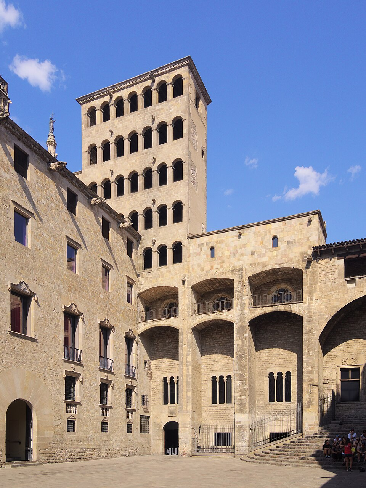
Wikimedia Commons · CC BY-SA 4.0 · Palau Reial Major 2574.jpg 歷史 · Historia 巴塞隆納的前身可追溯到羅馬殖民城 Barcino，當時城牆、街道格局與公共建築集中在今天哥德區一帶。中世紀時，這裡成為加泰隆尼亞政治、宗教與商業生活的中心。所謂「哥德區」雖然名稱聽起來完全是中世紀風格，但實際上可見的城市層次更複雜：有羅馬城牆、哥德式教堂、中世紀王宮空間，也有 19–20 世紀城市改造後整理出的立面。
看點 · Qué Ver 重點不是「打卡某一棟樓」，而是看城市肌理。建議留意羅馬城牆殘段、巴塞隆納主教座堂外觀、Plaça del Rei 周邊的中世紀感、拱廊、小廣場與石板巷。哥德區的魅力在於走幾分鐘就會從熱鬧商街轉入安靜小巷，很能感受歐洲老城的空間尺度。
動線 · Recorrido 9/21 上午從主教座堂周邊開始，繞 Plaça del Rei、羅馬城牆與幾條小巷即可。午後回住宿午休；若仍有體力，再延伸至 El Born 或加泰隆尼亞音樂宮，不必一次走完整個老城。
提醒 · Aviso 哥德區與蘭布拉大道周邊扒手多，手機、錢包與護照不要放外套口袋或後背包外層。巷弄石板路不一定平，行李不要拖進去走太久。晚上仍可散步，但避免太僻靜的巷子。
05
波蓋利亞市場 La Boqueria 波蓋利亞市場是蘭布拉大道旁最有名的傳統市場，也是巴塞隆納食材、熟食與觀光小吃最集中的地方之一。它適合短時間感受飲食文化，不適合當作安靜用餐地點。
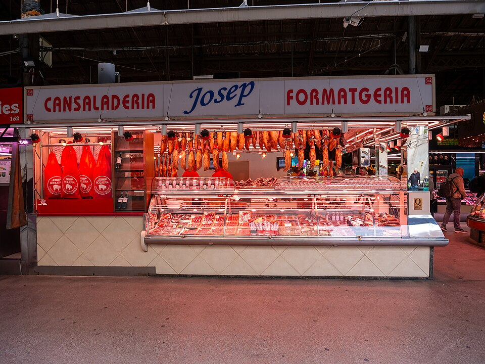
Wikimedia Commons · CC BY-SA · Boqueria, Barcelona (P1170751).jpg 歷史 · Historia 這一帶很早就有露天市集與肉品交易，後來逐漸形成固定市場。現代的波蓋利亞市場發展成城市中心重要食材供應地，也因位在蘭布拉大道旁而變成觀光客必訪市場。它保留了傳統市場的食材展示，但同時也高度觀光化。
看點 · Qué Ver 可以看西班牙火腿、起司、橄欖、海鮮、水果、果汁、甜點、香料與市場吧台。對第一次到西班牙的人來說，火腿切片、海鮮吧台與色彩豐富的水果攤很有視覺記憶點。若想簡單吃一點，可選市場內熟食或吧台 tapas，但不必期待很悠閒。
動線 · Recorrido 從蘭布拉大道入口進入，走一圈即可。本行程安排在 9/21 晚間，可把它當作短暫散步與補給點，而不是一定要在市場內完成正式晚餐。若人潮太多，進去看 10–20 分鐘即可離開。
提醒 · Aviso 市場價格未必便宜，部分攤位主要服務觀光客。人多時不要邊走邊打開包包找錢，手機不要放桌面。晚間攤位可能陸續收攤，若時間太晚，只能看氣氛，不一定適合覓食。
06
蘭布拉大道 La Rambla 蘭布拉大道是巴塞隆納最著名的城市散步大道，連接加泰隆尼亞廣場與港口。它的價值在於城市氣氛與歷史軸線，而不是單一古蹟。
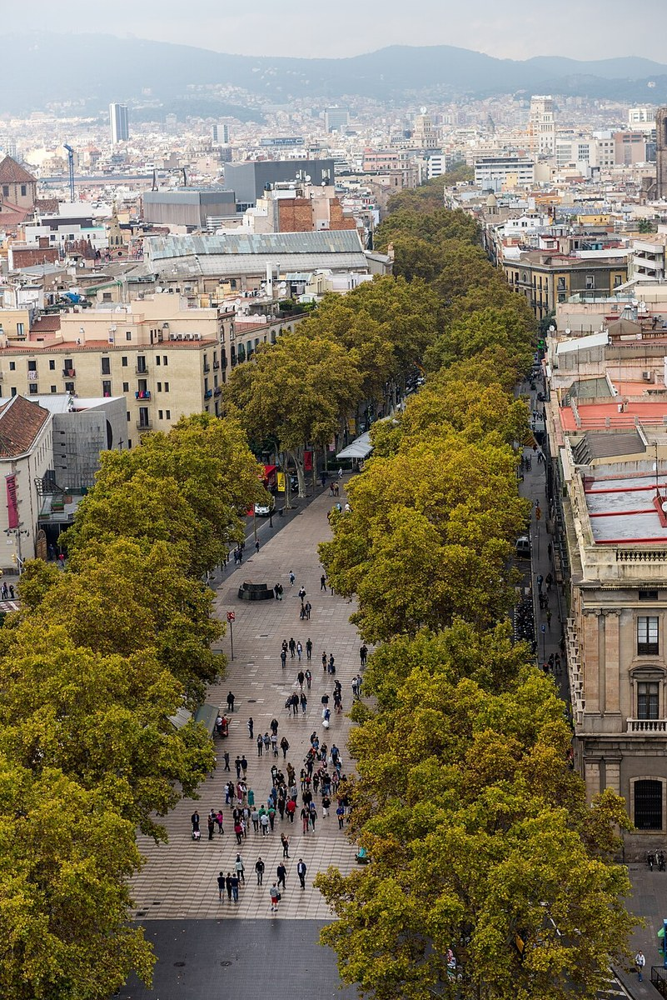
Wikimedia Commons · GFDL 1.2 · 15-10-27-Vista des de l'estàtua de Colom a Barcelona-WMA 2791.jpg 歷史 · Historia 蘭布拉過去曾是城市邊緣的溪流或排水帶，隨著城市發展轉變為市場、劇院、花店、報攤與行人活動集中的大道。它見證了巴塞隆納從中世紀老城向現代城市過渡的過程。
看點 · Qué Ver 可以看街道兩側建築、花攤、劇院外觀、通往哥德區與波蓋利亞市場的巷口，以及一路走向港口的城市軸線。若只想體驗，可走市場附近一小段，不必從頭走到尾。
動線 · Recorrido 建議與波蓋利亞市場、哥德區一起短走。9/21 晚間從市場附近走一兩個街口即可；蘭布拉大道不是越走越精彩，重點是感受氣氛並保留體力。
提醒 · Aviso 這是巴塞隆納最需防扒的區域之一。不要停在人群中看街頭表演太久，不要把背包放在身後，不要把手機放餐桌邊緣。晚間人潮複雜，建議只走主路，不鑽小巷。
07
El Born 區 El Born 是哥德區旁邊更有生活感、設計感與小店氣氛的老城區。相較哥德區更像「歷史核心」，El Born 更像「老城裡的散步、咖啡、小店與晚餐區」，很適合接在哥德區後面視體力順走。
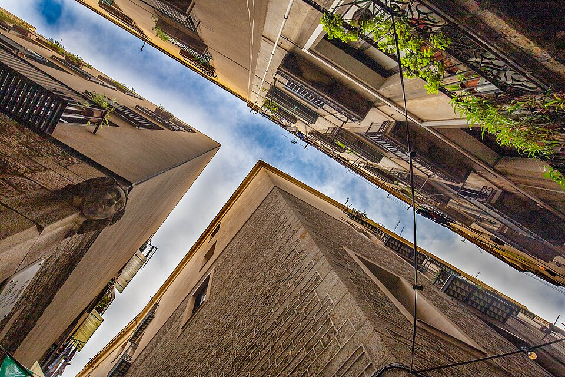
Wikimedia Commons · CC BY 2.0 · El Borne, Barcelona (49583863393).jpg 歷史 · Historia El Born 位在巴塞隆納舊城東側，中世紀時與商業、手工業、海運活動關係密切。這裡靠近港口，過去有商人、工匠與城市貿易活動，也保留許多狹窄街道與老建築。近代後，El Born 逐漸形成有設計店、餐廳、咖啡館與文化空間的街區，氣氛比蘭布拉大道更輕鬆，也較有在地生活感。
看點 · Qué Ver 重點是街區氣氛：小巷、石造建築、設計小店、咖啡店、餐酒館與老市場周邊。若不進美術館，El Born 仍可只靠散步感受城市。Santa Maria del Mar 教堂外觀、Passeig del Born、周邊餐廳街都適合短走。
動線 · Recorrido 可從哥德區往東走到 El Born，但想保留體力時不必走太遠。建議把它當作哥德區慢遊的延伸：若上午哥德區後仍有體力，就進 El Born 找咖啡、午餐或小店；若累了，直接回飯店休息。傍晚再來也可以，氣氛更活。
提醒 · Aviso 巷弄仍是石板路，鞋子要好走。部分街道狹窄，計程車不一定能停在店門口。晚餐時段人潮多，熱門餐廳最好預約。它不是必去大景點，可視當天體力作彈性加減。
08
聖卡特琳娜市場 Mercat de Santa Caterina 聖卡特琳娜市場是 El Born / Santa Caterina 一帶很適合短停的市場，以彩色波浪屋頂聞名。相較波蓋利亞市場，它通常比較不那麼觀光爆量，適合想看市場但不想被人潮淹沒的人。
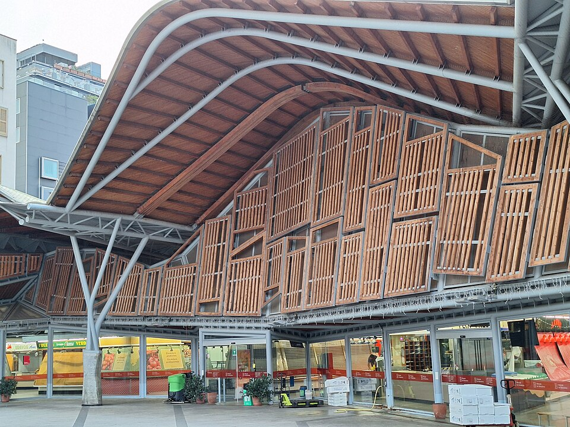
Wikimedia Commons · CC BY-SA 4.0 · Mercat de Santa Caterina - 20241105 171011.jpg 歷史 · Historia 市場所在地原本與聖卡特琳娜修道院有關，後來成為城市市場。現代最吸引人的部分是 21 世紀初改造後的彩色起伏屋頂，由建築師 Enric Miralles 與 Benedetta Tagliabue 的團隊設計。屋頂像一片彩色馬賽克波浪，呼應市場裡蔬果與食材的色彩，也讓傳統市場變成當代建築景點。
看點 · Qué Ver 外面先看彩色波浪屋頂與市場立面，進入後可看蔬果、肉品、海鮮、熟食與日常採買氣氛。它不像波蓋利亞那麼強烈「觀光表演感」，比較適合短時間感受巴塞隆納居民市場。
動線 · Recorrido 與 El Born 一起安排最順。若從哥德區走過來，可先看市場屋頂，再進去走一圈，之後找附近咖啡或午餐。停留 20–40 分鐘足夠。
提醒 · Aviso 市場營業時間需事先確認，太晚可能攤位收得差不多。若不喜歡市場氣味或人多，可只看外觀屋頂。這裡不是大型景點，不必專程跨城前往。
09
加泰隆尼亞音樂宮 Palau de la Música Catalana 加泰隆尼亞音樂宮是巴塞隆納最華麗的現代主義建築之一，也是很適合「不看美術館但看建築」的室內景點。它平路、導覽時間可控，作為哥德區 / El Born 慢遊的備選非常好。
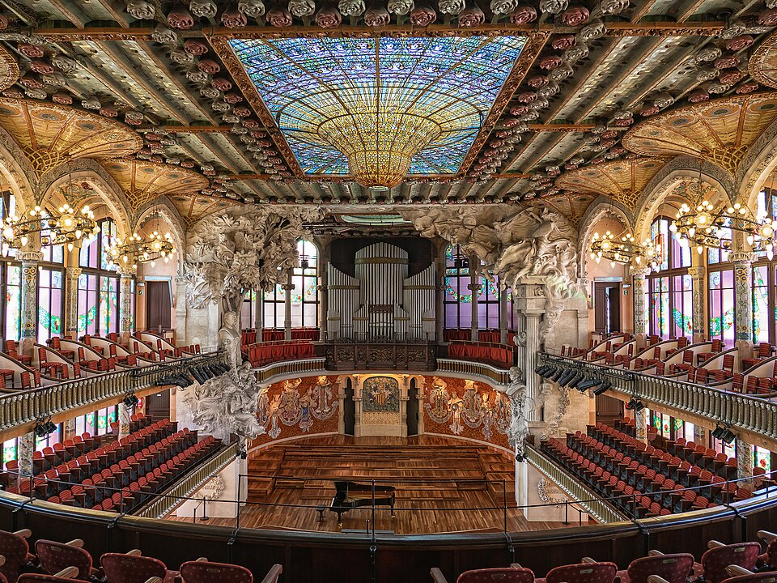
Wikimedia Commons · CC BY-SA 4.0 · Palau de la Música Catalana-Palace of Catalan Music (Image 2).jpg 歷史 · Historia 音樂宮由 Lluís Domènech i Montaner 設計，20 世紀初為加泰隆尼亞合唱團 Orfeó Català 建造。它代表加泰隆尼亞現代主義的另一條路線：與高第的自然結構不同，Domènech i Montaner 更強調裝飾藝術、工藝、彩色玻璃、鐵件、雕塑與建築整體協調。音樂宮後來被列入世界文化遺產，是巴塞隆納現代主義建築的重要代表。
看點 · Qué Ver 最重要的是音樂廳內部：彩色玻璃天窗像倒掛的太陽，舞台周邊有雕塑、花卉、女神與音樂象徵，整個大廳像一座由光線、陶瓷與玻璃構成的室內花園。外觀也值得看，尤其是紅磚、柱子、馬賽克與轉角雕塑。若不想排太重的景點，這裡比大型美術館更精簡、更容易留下印象。
動線 · Recorrido 可安排在哥德區或 El Born 同一天，導覽或自助參觀大約抓 50–60 分鐘。若喜歡音樂或建築，很值得加入；若當天時差仍重，則保留為備選。建議事先訂票，避免到現場沒有合適時段。
提醒 · Aviso 它仍是音樂表演場地，開放區域與時段會受演出影響。若參加導覽，需準時抵達。室內拍照通常可以，但要遵守現場規定，不要用閃光燈或影響其他參觀者。
10
聖家堂 Sagrada Família 聖家堂是巴塞隆納最重要的地標，也是安東尼・高第的代表作。它不是一般教堂，而是一座用建築、雕塑、光線與結構講述宗教故事的巨型作品，是本行程巴塞隆納部分最不可刪的景點。
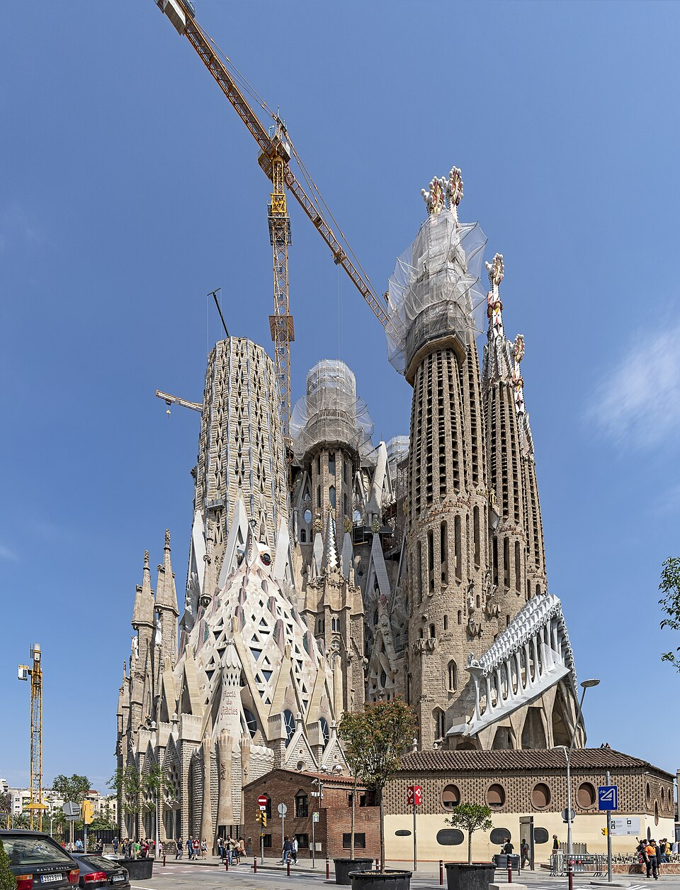
Wikimedia Commons · CC BY-SA 4.0 · Barcelona - Exterior of the Apse of the Sagrada Família - Western exposure.jpg 歷史 · Historia 聖家堂 1882 年開工，最初由 Francisco de Paula del Villar 設計，後來由高第接手並徹底改變方向。高第把哥德式教堂的垂直感、加泰隆尼亞現代主義、自然界結構與基督教象徵融合在一起。他晚年幾乎全心投入聖家堂，1926 年去世時工程尚未完成。此後建築依靠模型、圖面、後世建築師與工匠逐步延續，至今仍可看到新舊石材與施工痕跡。
看點 · Qué Ver 外觀至少要分別看兩面：誕生立面與受難立面。誕生立面細節繁複、充滿自然與生命意象，是高第在世時完成度最高的部分；受難立面線條較冷峻、人物雕塑更尖銳，呈現耶穌受難的沉重感。室內最值得看的是森林般的柱列、像樹枝分岔的結構、彩色玻璃在不同方向投下的光線，以及柱子、天花與窗戶共同形成的自然空間感。
動線 · Recorrido 本行程已安排 9/22 11:00 英文導覽與登塔。跟隨導覽時，先掌握誕生立面、受難立面與中殿整體設計，再留意柱列、彩色玻璃及光線方向。登塔通常搭電梯上行、沿狹窄螺旋樓梯步行下樓；應依現場分配的塔別與工作人員指示行動。導覽結束後再步行前往聖保羅醫院，行程銜接最順。
提醒 · Aviso 本行程 10:50 在 Mallorca 街與 Marina 街交叉口的 Meeting point 3 集合，全員須攜帶護照並穿著適合教堂的服裝。登塔不適合懼高、行動不便、心肺狀況不佳或無法自行走下狹窄樓梯者；若遇強風、大雨或安全因素，塔區可能臨時關閉。附近人潮極多，入場前後均須注意扒手。
11
聖保羅醫院 Hospital de Sant Pau 聖保羅醫院是巴塞隆納現代主義建築群，與聖家堂同屬理解加泰隆尼亞現代主義的重要景點。相較聖家堂，它更安靜、平緩、好走，特別適合慢遊。
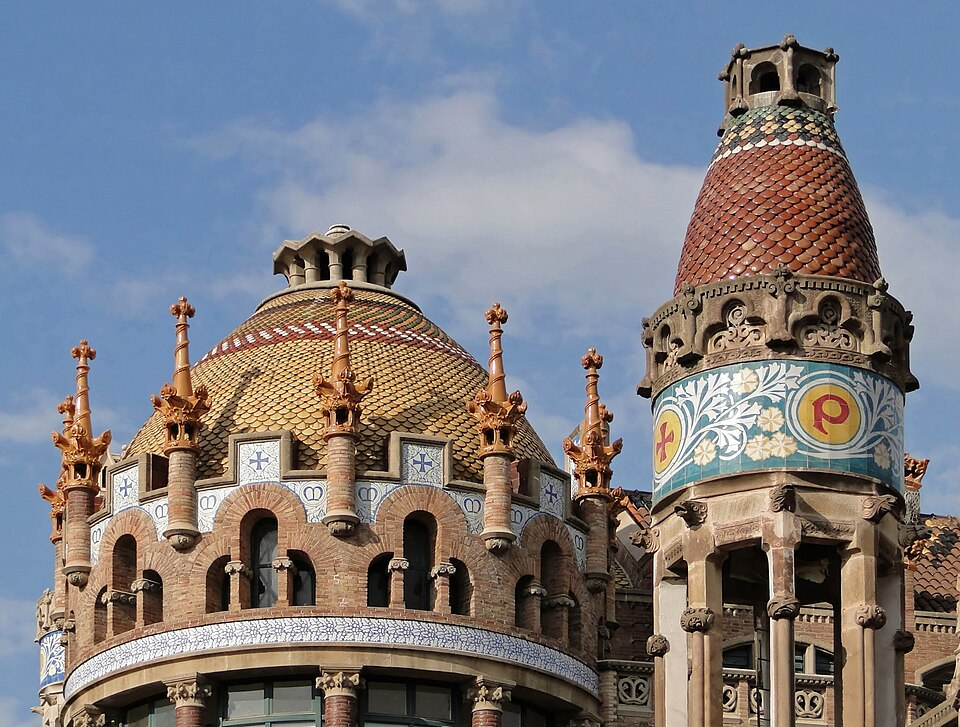
Wikimedia Commons · CC BY-SA 3.0 · Hospital de Sant Pau 02.jpg 歷史 · Historia 這裡由建築師 Lluís Domènech i Montaner 設計，原本是真正運作的醫院園區。設計理念在當時相當先進：把病房分散成多棟亭閣，利用花園、日照、通風與地下通道改善照護環境。它反映 19 世紀末到 20 世紀初歐洲對醫療、人道照護與城市衛生的重新想像。
看點 · Qué Ver 最值得看的是主入口建築、彩色磁磚、馬賽克、穹頂、病房亭閣、地下通道與花園。與高第作品相比，聖保羅醫院的裝飾更整齊、色彩更明亮，也比較容易感受「建築為病人服務」的概念。
動線 · Recorrido 從聖家堂步行或搭車過來都方便。建議作為聖家堂後的第二站，因為它人潮較少，可以放慢節奏。園區雖然寬，但不必每棟都看，抓主建築、地下通道、一兩棟病房與花園即可。
提醒 · Aviso 整體比許多古城景點好走，但仍有戶外曝曬。若上午已看聖家堂，這裡不要排太滿，避免建築疲勞。園區內適合休息與拍照，可作為上午硬景點後的緩衝。
12
感恩大道 Passeig de Gràcia 感恩大道是巴塞隆納最具代表性的現代主義建築大道，也是高第與同時代建築師作品密集的地帶。它適合下午外觀散步，不一定需要進屋參觀。
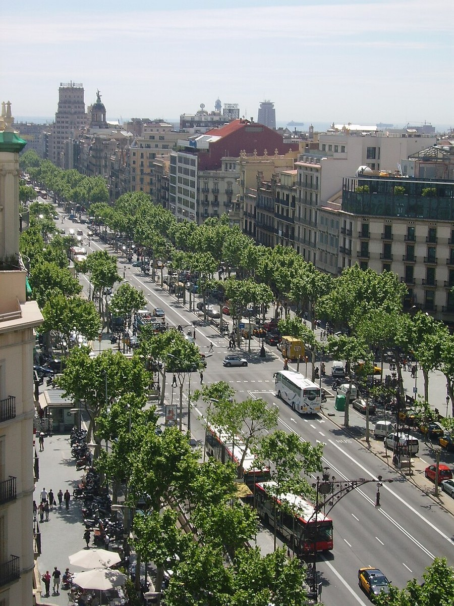
Wikimedia Commons · CC BY-SA 3.0 · Via Barcelona Casa Milà.JPG 歷史 · Historia 19 世紀巴塞隆納拆除舊城牆後，城市向 Eixample 擴張。感恩大道成為新興資產階級展示財富與品味的主要舞台，許多富裕家庭請當時最前衛的建築師設計住宅。這讓整條街成為現代主義建築的戶外展示場。
看點 · Qué Ver 沿路可看米拉之家、巴特婁之家與其他現代主義立面。重點是比較不同建築的外觀語言：有的像海浪，有的像骨骼，有的以磁磚與鐵件展現裝飾性。街道本身寬、平、商店多，較適合作為輕鬆散步。
動線 · Recorrido 聖家堂與聖保羅醫院後，若還有體力，可搭車到感恩大道，從巴特婁之家附近走到米拉之家附近即可。這段不需要太長，30–45 分鐘足夠。
提醒 · Aviso 這一天已經有兩個重點建築，不建議再安排大量室內參觀。若大家累了，感恩大道可改成車上經過或只看一棟外觀。
13
米拉之家 Casa Milà / La Pedrera（外觀） 米拉之家是高第成熟期住宅作品，以波浪狀石材外牆與雕塑感屋頂聞名。本行程以外觀為主即可。
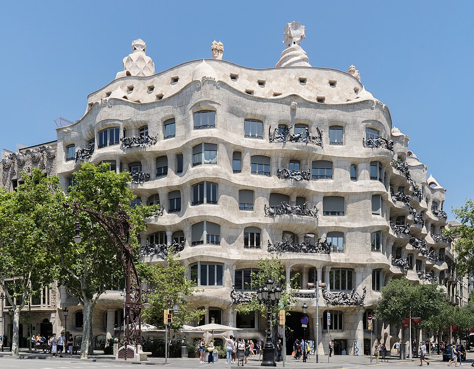
Wikimedia Commons · CC BY-SA 4.0 · Casa Milà, general view.jpg 歷史 · Historia 米拉之家建於 20 世紀初，是高第為富裕業主設計的公寓住宅。當時它的外觀過於前衛，被戲稱為 La Pedrera「採石場」。它沒有傳統立面常見的直線秩序，而是以流動的石材曲線與鍛鐵陽台呈現自然地貌感。
看點 · Qué Ver 外觀可看波浪狀石牆、陽台鐵件、屋頂煙囪剪影與轉角處的流動感。若站在街角斜看，會比正面看更能感受建築像岩壁般包住街角。
動線 · Recorrido 從感恩大道散步時順路看即可。若只看外觀，停留 10–15 分鐘足夠。室內與屋頂雖有名，但需要另外排隊、購票與花時間。
提醒 · Aviso 外面人潮與車流多，拍照時注意路口與隨身物。若已看聖家堂與聖保羅醫院，米拉之家入內可刪，避免一天看太多建築造成疲勞。
14
巴特婁之家 Casa Batlló（外觀） 巴特婁之家是高第最具童話感的住宅改造作品之一。外觀充滿龍、骨骼、海底世界與彩色磁磚的想像，非常適合短暫停留拍照。
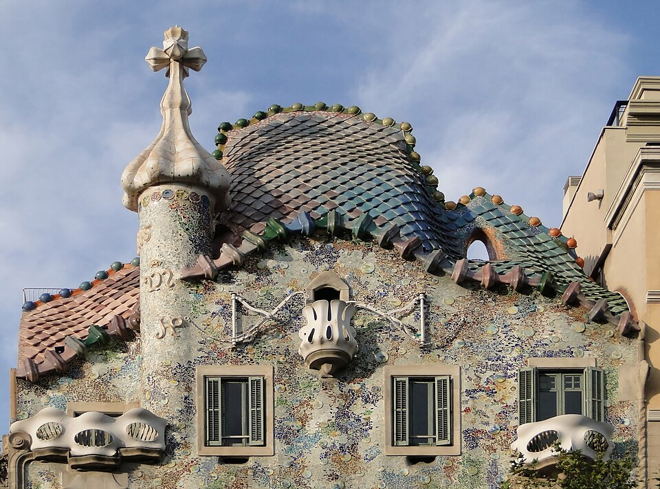
Wikimedia Commons · CC BY-SA 3.0 · Casa Batlló 01.jpg 歷史 · Historia 高第不是從零開始建造巴特婁之家，而是改造既有住宅。他把立面、窗戶、屋頂與室內光井重新設計，使整棟建築看起來像有生命的有機體。常見解讀會把屋頂視為龍背，陽台像面具或骨骼，與加泰隆尼亞聖喬治屠龍傳說相連。
看點 · Qué Ver 外觀重點是彩色磁磚、波浪形窗框、骨骼般陽台、屋頂龍背與夜間燈光。它比米拉之家更鮮豔、更容易一眼記住。
動線 · Recorrido 與感恩大道一起順路外觀即可。若對高第很有興趣，巴特婁之家內部比米拉之家更有故事性，但本行程不建議在同一天加太多室內參觀。
提醒 · Aviso 門口常有大量拍照人潮，小心扒手與車道。若只看外觀，不要在門口久站排隊，停留 10 分鐘即可。
15
城堡公園 Parc de la Ciutadella 城堡公園是巴塞隆納市中心較容易抵達的大型公園，適合在建築景點後放鬆散步。它不是重型古蹟，而是城市休閒與歷史轉型的空間。
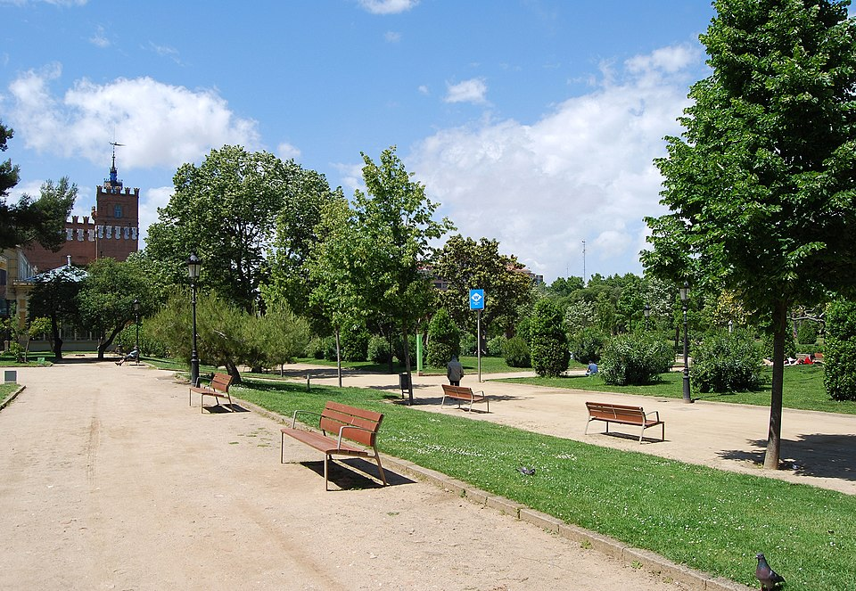
Wikimedia Commons · CC BY 3.0 · Parc de la Ciutadella Barcelona Mai 2013.jpg 歷史 · Historia 這裡原本是 18 世紀波旁王朝在巴塞隆納建立的軍事城堡，用於控制城市。後來軍事設施被拆除，改造成公共公園，並成為 1888 年巴塞隆納萬國博覽會的重要場域。從軍事控制空間變成市民休閒空間，本身就反映城市政治與社會變遷。
看點 · Qué Ver 可看大噴泉、湖區、樹蔭步道、凱旋門方向的城市軸線，以及在地人散步、跑步、划船與野餐的生活感。若時間剛好，夕陽前後光線舒服。
動線 · Recorrido 適合接在感恩大道或海邊晚餐前。不要設定走完整座公園，只抓入口到大噴泉或湖邊一段即可。
提醒 · Aviso 白天相對舒服，天黑後僻靜區域不建議久留。若當天已走很多，公園可刪，改成飯店休息。
16
奎爾公園 Park Güell 奎爾公園是高第最具童話感的戶外作品之一，也是巴塞隆納眺望城市的好地方。它結合建築、景觀、山坡地形與彩色馬賽克，是巴塞隆納必看高第景點之一。
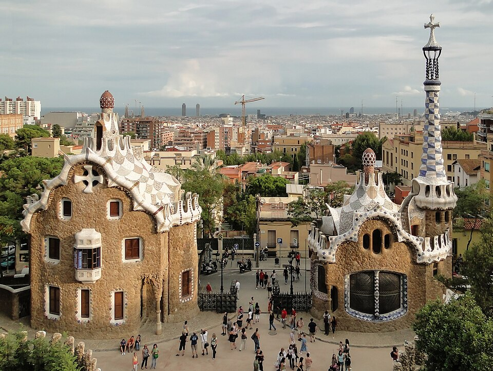
Wikimedia Commons · CC BY-SA 3.0 · Park Güell 02.jpg 歷史 · Historia 奎爾公園原本是企業家 Eusebi Güell 與高第合作的山坡住宅開發案，希望打造富人居住的花園社區。計畫商業上並不成功，住宅沒有大量售出，但留下了公共廣場、入口建築、柱廳、道路與景觀設計。後來它成為公共公園，並被視為高第把自然、建築與城市景觀結合的重要作品。
看點 · Qué Ver 必看入口兩棟像糖果屋的建築、彩色蜥蜴、百柱廳、波浪長椅與主露台。主露台可俯瞰巴塞隆納與海，波浪長椅上的碎瓷馬賽克是高第與工匠合作的經典細節。道路、柱子與山坡擋土牆也很值得看，因為它們常被設計成像自然岩石與樹幹。
動線 · Recorrido 建議預約早上，搭計程車到較省力入口。入園後先看核心 Monumental Zone，再視體力看周邊步道。不建議從地鐵站一路爬坡上去，會消耗太多體力。
提醒 · Aviso 園區高低差明顯、遮蔭有限，中午很曬。票券通常需預約，熱門時段人多。若遇雨，磁磚與石階可能滑；若不想爬坡，務必放慢速度。
17
蒙特惠克山 Montjuïc 蒙特惠克是巴塞隆納面向港口的城市山丘，集合城堡、觀景、公園、博覽會建築與奧運遺產。它適合用交通工具上山看景，不適合用步行硬走全區。
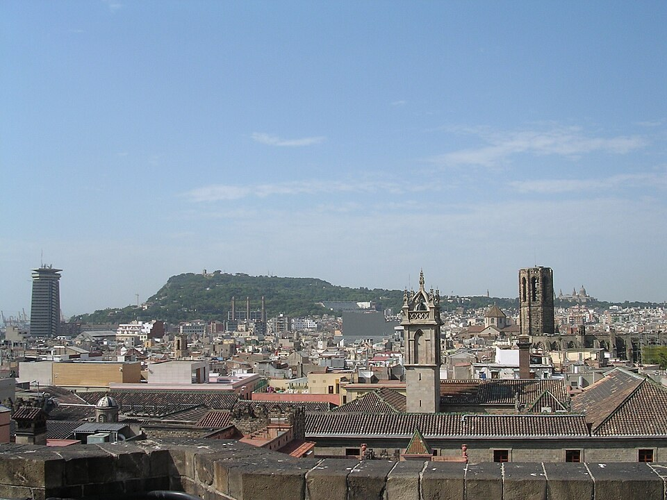
Wikimedia Commons · CC BY-SA 3.0 · Fale - Spain - Barcelona - 8.jpg 歷史 · Historia 蒙特惠克因位置控制港口與城市，長期具有軍事意義。近代它又成為 1929 年國際博覽會與 1992 年奧運的重要場域，因此山上同時有城堡、展館、廣場、運動設施與公園。這裡可以看到巴塞隆納從軍事城市、展覽城市到奧運城市的轉變。
看點 · Qué Ver 值得看港口與市區視野、纜車景觀、城堡外觀、國家宮前方廣場軸線，以及山上較開闊的綠地。若時間有限，重點放在觀景與纜車體驗即可。
動線 · Recorrido 以計程車、公車或纜車移動。先上山看城堡或觀景，再下到國家宮與魔幻噴泉周邊。不要嘗試從山下走到山上，對體力分配不划算。
提醒 · Aviso 山區範圍大，點與點之間看似近，實際常有坡度。9 月底白天仍可能很熱，需帶水與帽子。若當天已去奎爾公園，蒙特惠克只做精簡版。
18
舊港纜車 Telefèric del Port / Transbordador Aeri del Port 舊港纜車是連接巴塞隆納塔海邊與蒙特惠克 Miramar 一帶的高空港景纜車。它的重點不是通勤效率，而是用 70–90 公尺左右的高度橫越港口，看巴塞隆納海濱、舊港、遊艇與城市天際線。
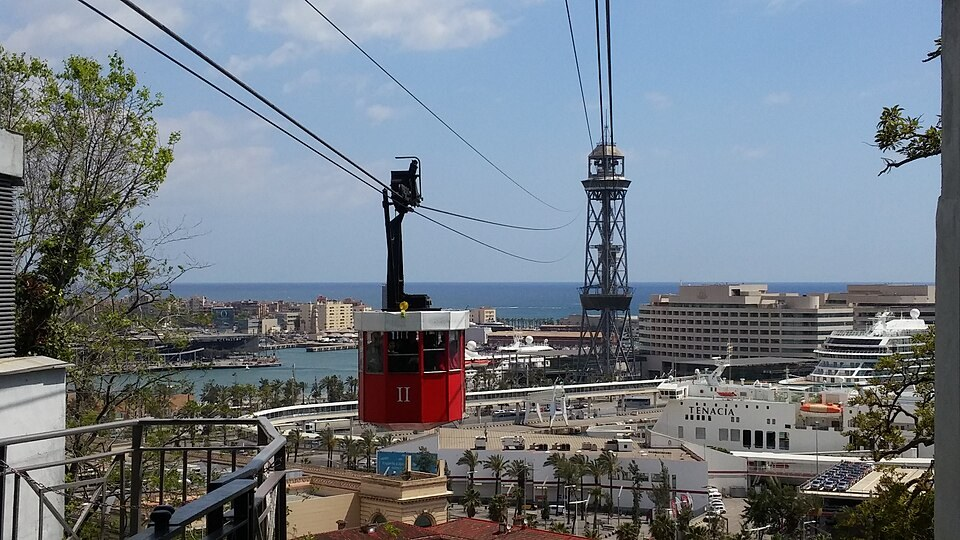
Wikimedia Commons · CC BY 2.0 · Cable Car over Barcelona harbour (26370600100).jpg 歷史 · Historia 這條纜車構想與 1929 年巴塞隆納國際博覽會有關，目的在於把蒙特惠克山與海港展區連起來。它保留了很有時代感的鋼塔與吊廂形式，與現代的蒙特惠克纜車不同，氣氛更復古，也更像城市工程遺產。
看點 · Qué Ver 最值得看的是從 Barceloneta / Port Vell 上空看港口的角度：遊艇碼頭、海岸線、Maremagnum、哥倫布紀念碑、蒙特惠克山坡與遠方市區都能一併進入視野。若天氣晴朗，這是一個很有效率的「不用爬山看港景」方式。
動線 · Recorrido 若當天安排 Barceloneta、Port Vell 與蒙特惠克，可把它當作兩地之間的景觀移動。不過它的實際效率不一定比計程車好，排隊或等候會影響節奏。想保留體力時，建議把它視為「天氣好、人不多、大家想搭再搭」的加分項，而不是硬性交通工具。
提醒 · Aviso 不要把它和蒙特惠克山上的 Telefèric de Montjuïc 混淆：舊港纜車是港口到 Miramar，蒙特惠克纜車則是山上往城堡方向。懼高者不適合。若風大、天氣差或維修，可能停駛；出發前要查當日營運。塔站可能有樓梯或等待時間，體力不佳時可直接改搭計程車。
19
蒙特惠克城堡 Castell de Montjuïc 蒙特惠克城堡是山頂軍事堡壘，現在主要價值在於觀景與理解巴塞隆納較沉重的軍事政治記憶。
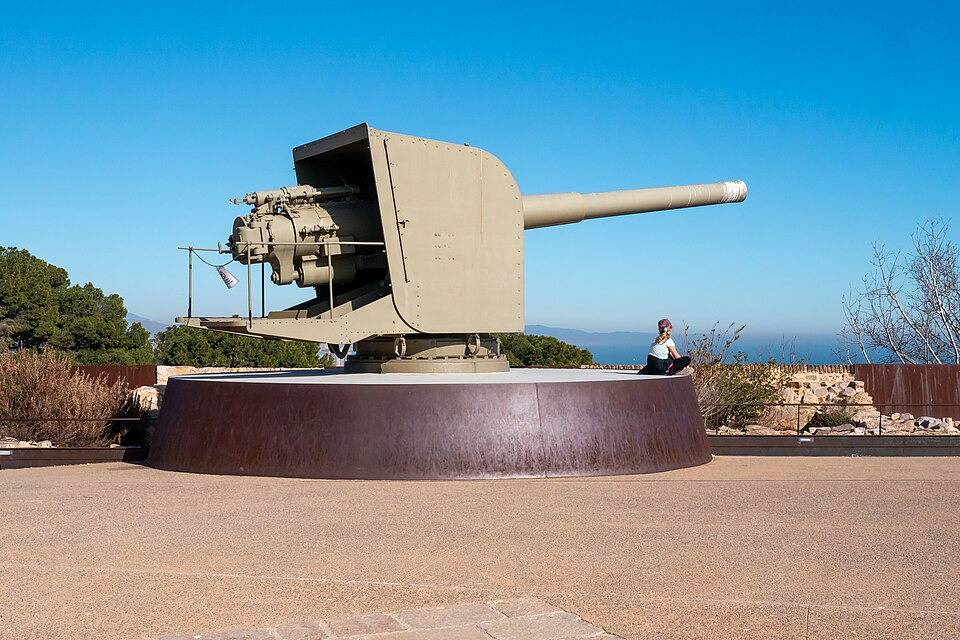
Wikimedia Commons · CC BY-SA · Castell Montjuic, Barcelona (P1170651).jpg 歷史 · Historia 城堡所在山頭可以控制城市與港口，因此長期被用作軍事防禦與監控。它在不同時期曾涉及城市鎮壓、監禁與戰爭記憶。與高第建築相比，這裡不是浪漫景點，而是城市權力與軍事歷史的象徵。
看點 · Qué Ver 最值得看的是城牆、港口全景、巴塞隆納市區視野與地中海方向的開闊景觀。若不進入城堡，外圍視野也已經足夠。
動線 · Recorrido 搭纜車或計程車上來，看外觀與景色即可。若體力普通，不建議花太多時間看展覽或完整繞城牆。
提醒 · Aviso 城堡周邊日曬強、風可能大。若對軍事史興趣不高，這裡可作為「觀景點」而非完整古蹟參觀。
20
魔幻噴泉 Font Màgica de Montjuïc 魔幻噴泉是巴塞隆納經典夜間活動，重點是水柱、燈光、音樂與國家宮前廣場夜景。它適合作為輕鬆加值活動，不應成為必去硬點。
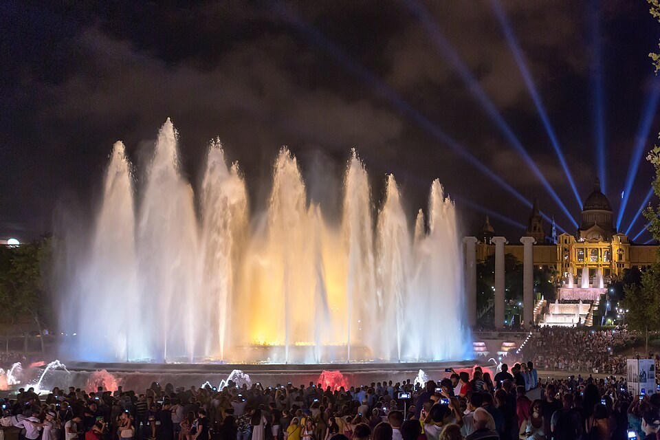
Wikimedia Commons · CC BY-SA 3.0 · Barcelona - Font Màgica - 2016.jpg 歷史 · Historia 噴泉建於 1929 年巴塞隆納國際博覽會，當時是展示城市現代化、工程技術與公共娛樂的重要設施。國家宮、階梯、廣場與噴泉共同形成壯觀的博覽會軸線。
看點 · Qué Ver 可看噴泉水舞、夜間燈光、國家宮立面與人群聚集的節慶氣氛。對慢遊節奏來說，它比理解複雜古蹟輕鬆，視覺效果直接。
動線 · Recorrido 若當晚有演出，只需提早一點到，站在視野可接受的位置看前段即可，不必看完整場。看完立刻叫車或避開人潮離開。
提醒 · Aviso 近年演出常受乾旱、水資源管制、維修或市政活動影響，出發前一定要查官方最新狀態。時間偏晚，若大家累了，應直接放棄。
21
蒙特塞拉特 Montserrat 蒙特塞拉特是巴塞隆納近郊最具象徵性的山區修道院與自然景觀，特色是鋸齒狀岩山、修道院、黑面聖母與加泰隆尼亞精神象徵。
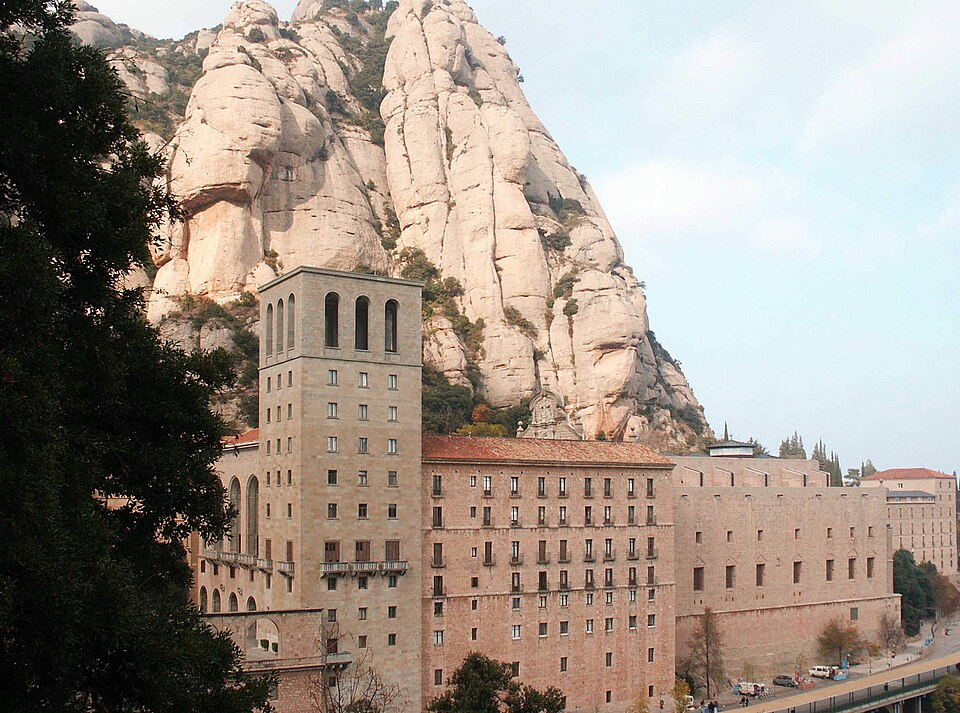
Wikimedia Commons · CC BY-SA 2.5 · MontserratMonastery02.jpg 歷史 · Historia Montserrat 在加泰隆尼亞文化中地位特殊，不只是宗教朝聖地，也與地方身份認同密切相關。山名意為「鋸齒山」，來自獨特的岩峰形態。山上本篤會修道院長期保存宗教傳統、音樂與文化記憶，黑面聖母 La Moreneta 更是加泰隆尼亞重要聖像。
看點 · Qué Ver 主要看三件事：山形、修道院、黑面聖母。即使不健行，也能從修道院廣場、觀景平台與交通上山過程感受岩山氣勢。若天氣晴朗，從山上望向加泰隆尼亞平原非常壯觀。
動線 · Recorrido 本行程先到西班牙廣場的 Montserrat Welcoming Point 辦理乘車憑證，再搭 R5 火車與齒軌火車上山。抵達後先看修道院、黑面聖母與廣場；中午進入聖殿等候男童合唱團，下午再依體力選 Sant Joan 登山纜車或 Santa Cova。全日以交通工具和短距離散步為主，不走長程登山路線。
提醒 · Aviso 交通轉乘需事先理解票種，齒軌火車與空中纜車的轉乘站不同。本行程套票使用齒軌火車，應依憑證所列路線搭乘。山區天氣變化快，需帶薄外套；合唱團演出與各纜車營運仍可能因宗教活動、天候或維修調整，出發前須再次確認。
22
蒙特塞拉特修道院與黑面聖母 Santa Maria de Montserrat / La Moreneta 修道院與黑面聖母是蒙特塞拉特的宗教核心，也是加泰隆尼亞最重要的朝聖象徵之一。
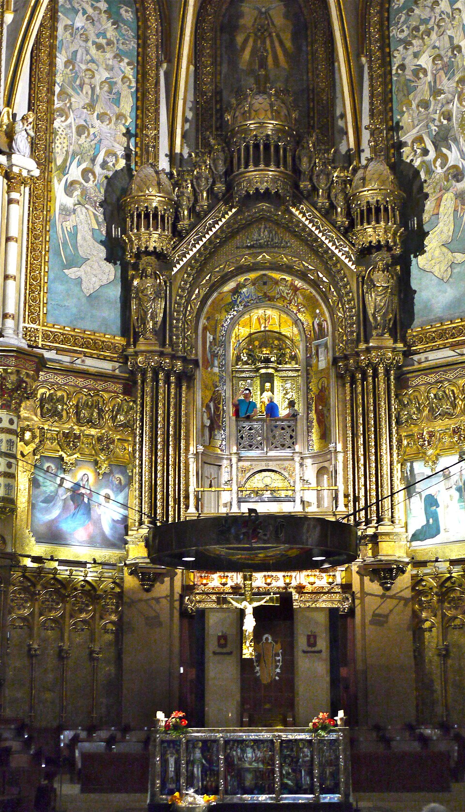
Wikimedia Commons · CC BY-SA 2.0 · P1110038 Montserrat, Basilica Santa Maria de Montserrat, la niche de la Moreneta, la Vierge noire, patronne de la Catalogne, au fond du choeur de la basilique (6351428346).jpg 歷史 · Historia La Moreneta 意為「小黑聖母」，其深色聖像長期受到信徒敬奉。修道院在歷史上曾經歷戰爭、破壞與重建，仍維持加泰隆尼亞宗教與文化精神中心的角色。對非宗教旅客來說，這裡仍可理解為地方身份與集體記憶的空間。
看點 · Qué Ver 值得看教堂內部、聖像朝聖動線、修道院前廣場與山景。若遇到唱詩班演唱，會是很有氣氛的體驗，但不能保證每天時間都合適。
動線 · Recorrido 先看修道院廣場與教堂，再依預約或現場動線近看黑面聖母。本行程預計 12:30–12:45 進入聖殿等候 13:00 男童合唱團演唱；應提早完成其他參觀並在指定區域安靜候場。
提醒 · Aviso 這裡是宗教場所，需保持安靜，服裝不宜過度裸露。黑面聖母與合唱團可能採不同預約或排隊動線，不應把兩者時間排得太緊。男童合唱團並非每日固定演出，最終仍以官方日程為準。
23
蒙特塞拉特齒軌火車 / 纜車 Cremallera / Aeri 上蒙特塞拉特的交通本身就是景觀體驗。齒軌火車較平穩舒適，纜車視野更刺激但對怕高者較不友善。
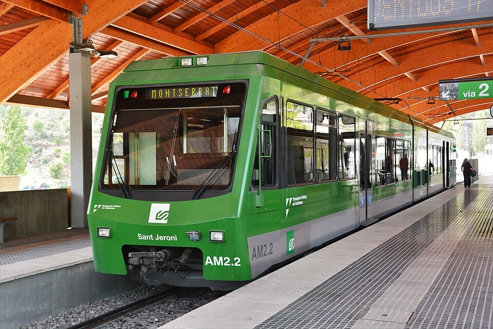
Wikimedia Commons · CC BY-SA 4.0 · FGC A GTW 01.jpg 歷史 · Historia 山岳交通讓蒙特塞拉特從傳統朝聖地變成一般旅客也能容易抵達的目的地。齒軌火車沿山勢緩慢上升，纜車則以空中路線快速連接山下與修道院區。
看點 · Qué Ver 齒軌火車可看列車逐步接近岩山、山谷與修道院位置變化。纜車則可直接看到垂直上升與山壁景觀。
動線 · Recorrido 慢遊優先選齒軌火車，節奏穩、上下車容易。購票前確認自己要搭的是 Cremallera 還是 Aeri，因為火車需在不同站下車轉乘。
提醒 · Aviso 不要臨時混用票種。回程時注意末班時間與人潮，避免太晚下山。怕高者不建議纜車。
24
Sant Joan 登山纜車 Funicular de Sant Joan Sant Joan 登山纜車從修道院區繼續往較高處爬升，是不走長程山路也能欣賞蒙特塞拉特岩峰與加泰隆尼亞平原的最佳方式之一。
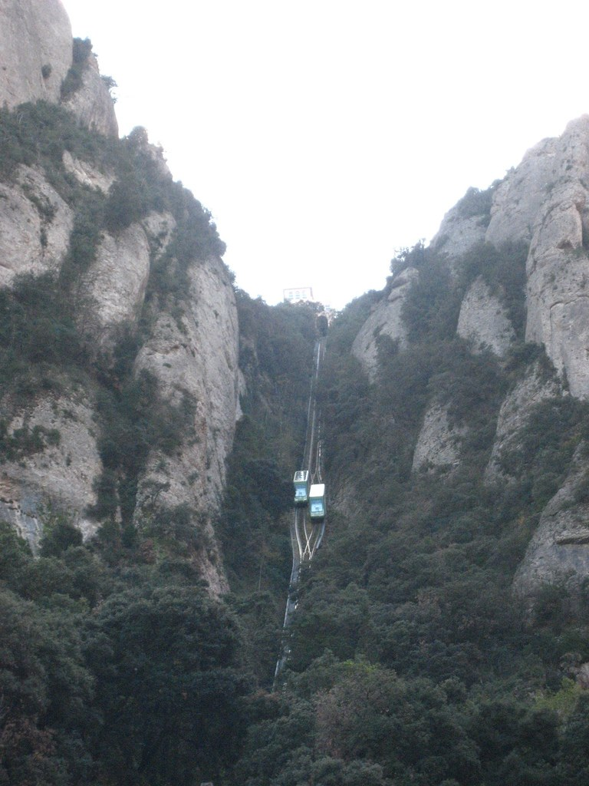
Wikimedia Commons · CC BY 2.0 · Sant Joan Funicular.jpg 歷史 · Historia 蒙特塞拉特的山岳交通系統讓朝聖者與一般旅客可以在陡峭地形中移動。Sant Joan 線把修道院區與較高的山坡觀景區連接起來，也讓旅客能近距離理解「鋸齒山」奇特的礫岩地貌。
看點 · Qué Ver 上行途中可看修道院逐漸縮小、岩壁快速抬升；上站附近可眺望鋸齒狀山峰、山谷與遠方平原。重點是視野，而不是一定要從上站開始健行。
動線 · Recorrido 安排在修道院與合唱團之後，若天氣晴朗且大家仍有體力，再搭纜車上下。到上站後只走鄰近、平緩且安全的觀景區即可，不進入長程步道。
提醒 · Aviso 山上風大、日照強，需帶薄外套、帽子與水。懼高或膝力不佳者可留在修道院區休息。營運可能受強風、維修或季節時刻表影響。
25
Santa Cova 聖洞 Santa Cova 是傳說中發現黑面聖母像的聖地，兼具宗教意義與山壁景觀。本行程將它列為下午依體力選擇的項目。
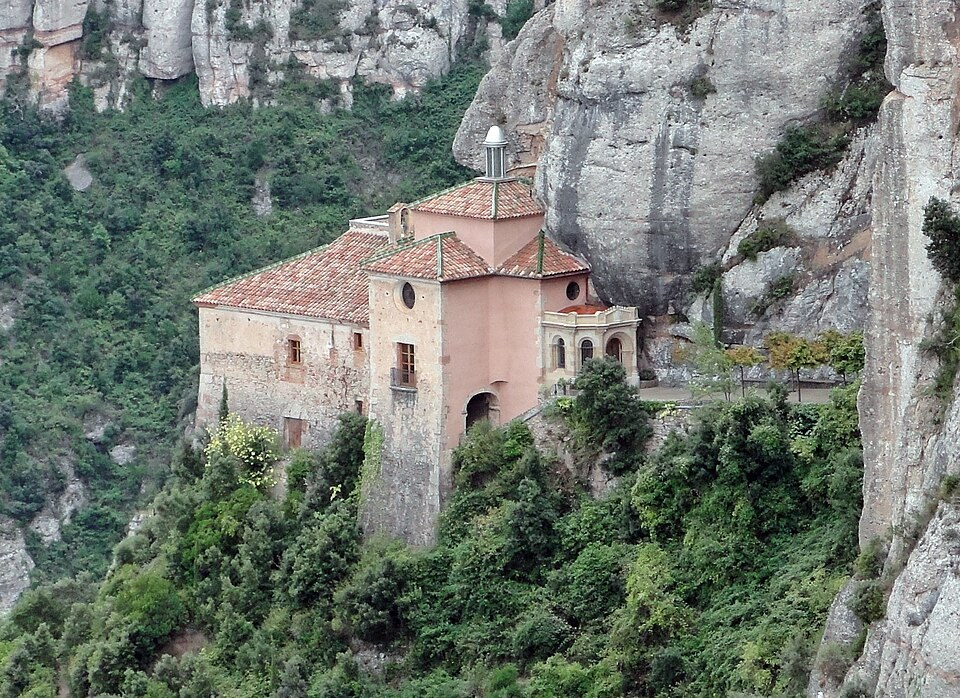
Wikimedia Commons · CC BY-SA 3.0 · Santa Cova Chapel, Montserrat.jpg 歷史 · Historia 依蒙特塞拉特傳統，黑面聖母像在山中洞穴被發現，Santa Cova 因而成為朝聖路線的一部分。後來沿途設置宗教雕塑與祈禱空間，把山路轉化為具有儀式性的朝聖動線。
看點 · Qué Ver 可看山壁間的禮拜空間、沿途山谷景色及宗教雕塑。它比修道院區安靜，也更能感受蒙特塞拉特作為朝聖山的意義。
動線 · Recorrido 可搭 Santa Cova 登山纜車縮短高低差，再視體力走往聖洞。若上午已站立很久、天氣炎熱或地面濕滑，留在修道院區休息更合適。
提醒 · Aviso 即使搭纜車，仍需走一段有坡度的步道，回程也要保留體力。它與 Sant Joan 不必兩者都完成，應依當日天候、纜車營運與長輩體力二選一。